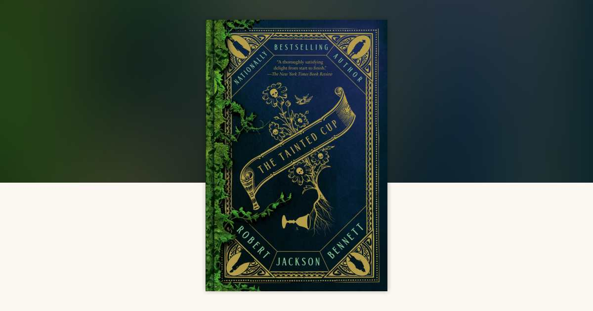
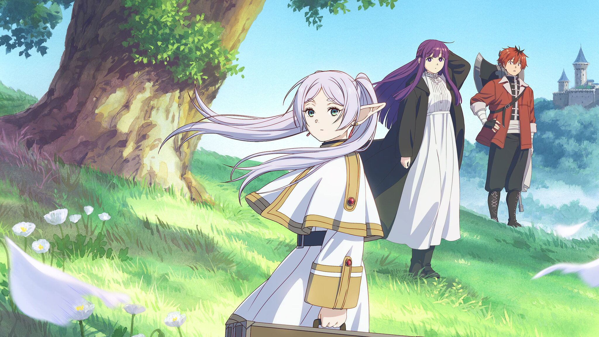

My Recent Inspirations
Deadlock
Deadlock, developed by Valve, is a fresh take on the MOBA genre, dominated by games like Dota 2 and League of Legends, by combining it with the extremely popular hero shooter genre.
What Deadlock does well that other games that try to combine genre fail at is that the combination feels natural. Many games combine genres but everything feels disconnected, they feel like you are playing two different games which can take players out of the game. Deadlock on the other hand creates an experience that feels natural like this is how things were always meant to be.

The Tainted Cup
The Tainted Cup, by Robert Jackson Bennett, combines two of my favourite genres, fantasy and mystery, and creates something brand new.
What I love most about The Tainted Cup is the worldbuilding. The world feels alive and lived in, quite literally as the world itself can best be desribed as biopunk. Biopunk, as the name suggests, is similar to steampunk but instead of steam the world is powered through plants and fungi. This world is like nothing I have seen before and I look forward to reading the sequel.

Frieren: Beyond Journey's End
Frieren: Beyond Journey's End follows Frieren, an immortal elf, decades after she defeated the demon king with her party of heroes.
I have always been fascinated by media that does not feel like their world takes place in a bubble. Many stories feel like their worlds only exist during the time the story takes place. Nothing before and nothing after. However, in Frieren: Beyond Journey's End the main story has already taken place. We are now seeing the after, the consequences of that story, and I am loving every minute of it.
